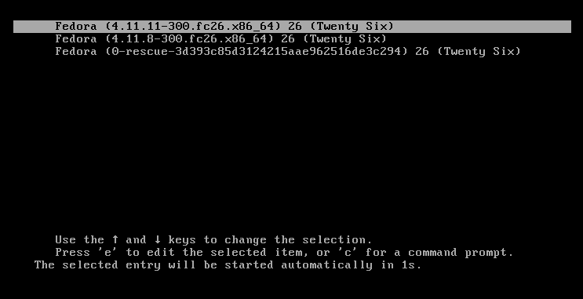
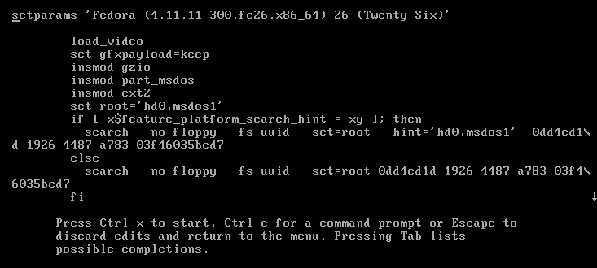
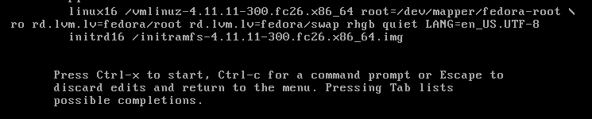
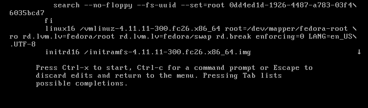

Redéfinir le mot de passe du super utilisateur (root)
Cet article est une traduction de https://fedoramagazine.org/reset-root-password-fedora/ initialement redigé par Curt WarfieldUn administrateur système peut aisément redéfinir les mots de passe des utilisateurs qui les auraiennt oublié ou perdu. Mais que se produit il si l'administrateur système oubli ou perd le mot de passe du super utilisateur root? Ce guide vous explique comment redéfinir ce mot de passe. Notez que pour cela vous devez avoir un accès physique au système, afin de redémarrer et accéder aux paramètres de Grub. De plus, si le système est encrypter, vous devez connaître la phrase secrète LUKS.
Modification des paramètres de Grub
Premièrement, vous devez interrompre le processus de boot. Il vous faut donc redemander ou allumer le système:

pressez "e" a l’apparition du menu Grub, l’écran suivant devrait apparaître

utilisez les flèches pour vous déplacer jusqu’à la ligne linux16

remplacez rhgb quiet par rd.break enforcing=0

Une fois la modification de ces options terminé, appuyez sur CTRL+x pour lancer le systeme. La phrase secrète LUKS vous sera demandé a cette étape si le système est encrypté.
Note: Le parametre enforcing=0, avoids performing a complete system SELinux relabeling. Once the system is rebooted, restore the correct SELinux context for the /etc/shadow file. (this is explained a little further in this process)
Montage du système de fichier
Le système devrait maintenant etre en mode emergency. Remontez le disque dur en lecture et écriture:
# mount –o remount,rw /sysroot
Changement du mot de passe
Accedez au système a l'aide de chroot.
# chroot /sysroot
Vous pouvez maintenant modifier le mot de passe
# passwd
Entrez et confirmez le nouveau mot de passe. Il vous sera indiqué en cas de succés que les jetons d'authentification ont correctement été mis a jour'
Remmetre le système en ordre
Saisissez exit, deux fois pour redemarrer le système
Connectez vous en tant que super uilisateur pour restaurer les etiquettes SELinux du fichier /etc/shadow.
# restorecon -v /etc/shadow
réacxtivez le mode fortifié de SELinux.
# setenforce 1